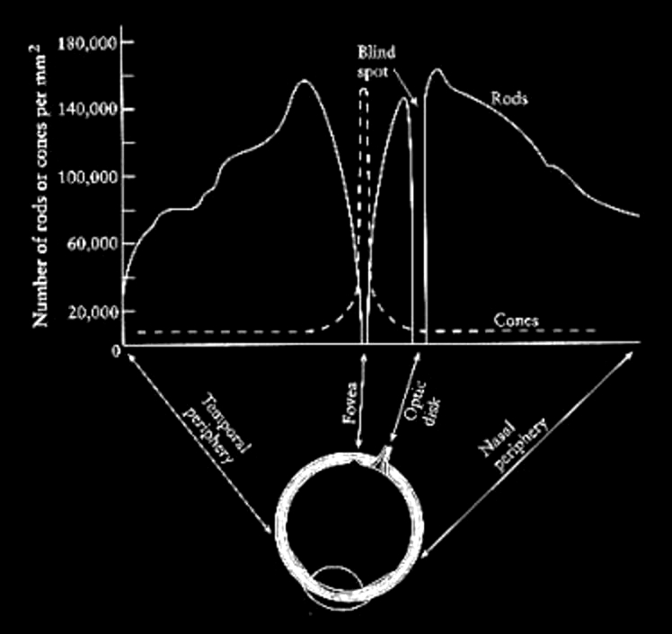
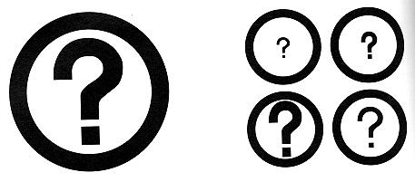

Human eye has 2 types of photosensitive receptors: cones and rods
cones
- operate at higher illumination levels
- provide better spatial resolution and contrast sensitivity
- provide color vision
- operate at lower illumination levels

bill sherman's diagram
The cones are highly concentrated at the fovea and quickly taper off around the retina. For colour vision we have the greatest acuity at the fovea. Visual acuity drops off as we move away from the center of the field of view. However, we are very sensitive to motion on the periphery of our vision, so we can see movement even if we can't see what is moving.
The rods are highly concentrated 10-20 degrees around the fovea, but almost none are at the fovea itself - which is why if you are stargazing and want to see something dim you can not look directly at it.
blind spot: where there are no cones and no rods. We can not see anything at this point and our brain compensates by filling in that part of our vision with surrounding colours and simple patterns.

simple blind spot finding: https://io9.gizmodo.com/why-every-human-has-a-blind-spot-and-how-to-find-your-5804116
There's a way to find your blind spot. Cover your left eye and look at the dot on the left in this image. Be aware of the cross on the right, but don't look at it - just keep your eye on the dot. Move your face closer to the monitor, and farther away. At some point, you should see the cross disappear. Stay at that point and close your right eye. Stare at the cross, and you should see that the dot has disappeared.
and troxler's fading - https://en.wikipedia.org/wiki/Troxler's_fading (from Science Magazine)

Color blind
It would be good if the colours you choose also work for people who are color blind.8% of men and 1% of women. Are you colour blind? You can check on wikipedia - http://en.wikipedia.org/wiki/Ishihara_color_test
Photoshop can be used to check images (View menu, Proof Setup, Color Blindness), as can the tool at http://colororacle.org and couple good web site to check your graphics: http://www.vischeck.com/vischeck/
Color blindness (color vision deficiency) is the decreased ability to see color or differences in color.
Three of the more common types of color blindness:
- Protanopia is caused by the complete absence of red retinal photoreceptors.
- Deuteranopia affects hue discrimination in a similar way to protanopia, but without the dimming effect. Again, it is found in about 1% of the male population.
- Tritanopia only the red and the green cone pigments are present, with a total absence of blue retinal receptors.
Here is an image to show how it would look for common types of color blindness:
Munker illusion from io9 or from sharpbrains


Color also depends on what is surrounding the color
or similarly if you look up at the moon at night it looks pretty bright in relation to the black sky around it, but its rather dark grey as in this photo:
http://history.nasa.gov/alsj/a16/AS16-117-18841HR.jpg
a very good More interesting ones: http://www.psy.ritsumei.ac.jp/~akitaoka/
What happens when we walk from a bright area into a dark area, say into a movie theatre? When we are outside the rods are saturated from the brightness. The cones which operate better at high illumination levels provide all the stimulus. When we walk into the darkened theatre the cones don't have enough illumination to do much good, and the rods take time to desaturate before they can be useful in the new lower illumination environment.
It takes about 20 minutes for the rods to become very sensitive, so dark adjust for about 20 minutes before going stargazing.
Since the cones do not operate well at low light intensities we can not see colour in dim light as only the rods are capable of giving us information. The rods are also more sensitive to the blue end of the spectrum so it is especially hard to see red in the dark (it appears black).
To human beings, brightness (perceived intensity) has a logarithmic scale, not a linear scale, which gives us a contrast ration of 100:1 under normal conditions and 1,000,000:1 if we dark adapt.
need to achieve a balance in the relationships between elements in the design
Scale - relative size or magnitude of a given design element in relation to other design elements - always relative
Contrast - noticeable differences along a common visual dimension (shape, size, color, position, orientation, movement)
Proportion - ratios of dimensions
Differentiation - contrast provides differentiation
Emphasis - scale and contrast are used to emphasize important elements of the design
Activity - scale and contrast move the viewer's eye through the composition in a predictable sequence
Interest -
scale and contrast add visual interest
Common Errors:
Insufficient contrast
here is a nice real world example: http://www.baddesigns.com/speedo.html
Visual interference - it seems like a nice idea to show
colours in the correct colour, or a font in its font, but these
can make the text harder to read. If you need to show the colour
then create a standard sized box to contain the colour then put
the standard colour text next to it.

Spatial tension

Awkward dimensions

Techniques:
Establishing perceptual layers
- Group each item of information into a small number (7 +/- 2) of categories according to its origin or intended use. A group must be established for any group of items that will need to be processed independently. Each item must be assigned to at least one group.
- Determine the rank or importance of the various groups and organize them into an even smaller number (e.g. 3-5) of echelons based on this ranking
- Use appropriate perceptual variables to establish the layering effect. Size and value can establish clear perceptual hierarchies, while hue is most effective for non-hierarchical grouping
- Maximize the perceptual difference between groups while minimizing the difference within groups
- Use the squint test to ensure that elements in the same layer group together as a unit, but that group itself can be visually separated from the rest of the display
Integrating figure and ground
- Determine the overall size of the figure/ground combination.
Note that designs will usually require adjustment as the overall
size is changed, since critical internal relationships are
disrupted when a figure is scaled uniformly.
- Equalize the visual weight of figure and ground. Use the squint test to check that neither the positive or negative space dominate.
- Provide enough space around the margins of the figure to
eliminate unwarranted visual tension.
- Position the figure correctly within the ground. The figure should usually be centered within the ground unless communication requirements dictate otherwise. Use the squint test .

Think about how you present information on a resume -
how you use white space (vertical and horizontal) to set apart the
different sections, underlining and boldface to highlight certain
words
Sources:
Some images are retrieved from online resources. Other are from previous TTU HCI classes
User Interface Design by Andrew Johnson
Designing Visual Interfaces by Mullet and Sano